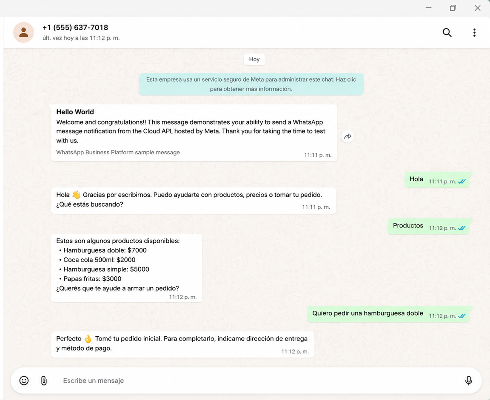
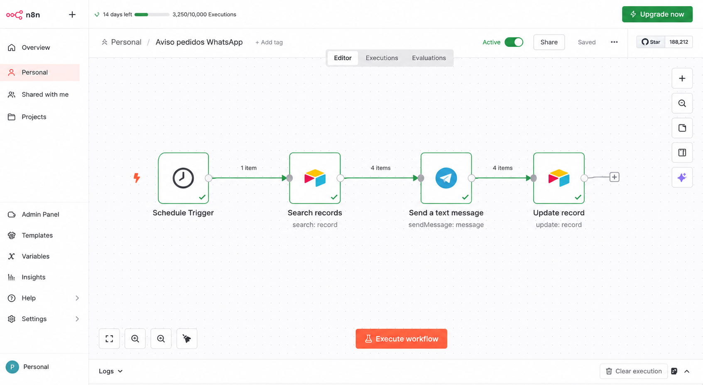
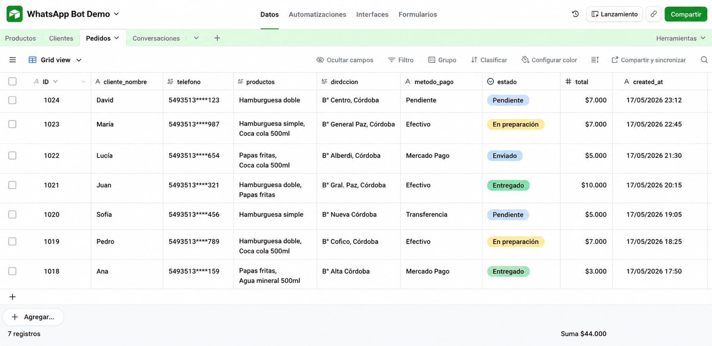
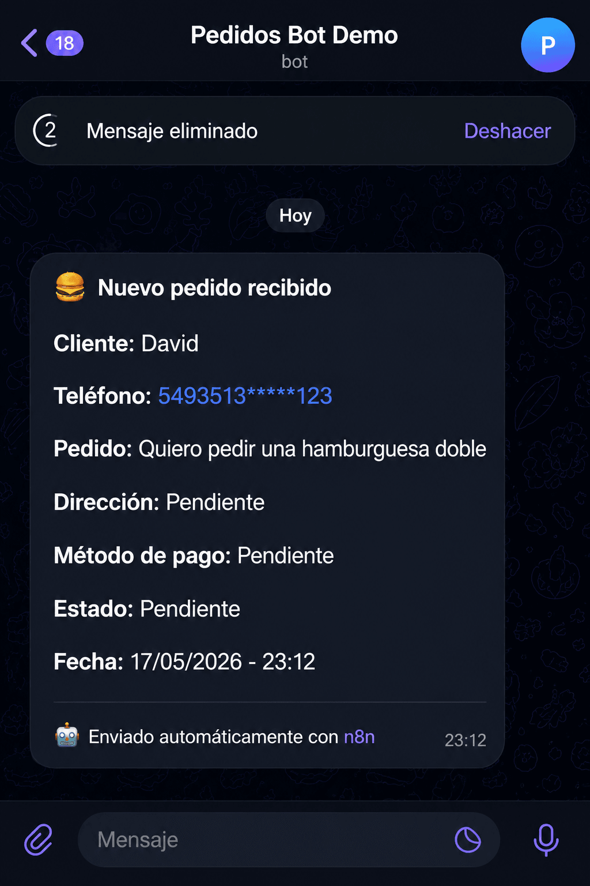

WhatsApp + IA + Automatización
Consultar por una solución similar
Bot de WhatsApp con IA para atención automática y gestión de pedidos
Sistema automatizado para responder consultas de clientes, interpretar mensajes, registrar pedidos y guardar información operativa en una base de datos.
Problema resuelto
Reducir la atención manual repetitiva y ordenar la recepción de pedidos.
Node.js
WhatsApp API
IA
Airtable
n8n
Webhooks
Resultado conseguido
Atención más rápida, registro automático de conversaciones y pedidos organizados en una tabla centralizada.



